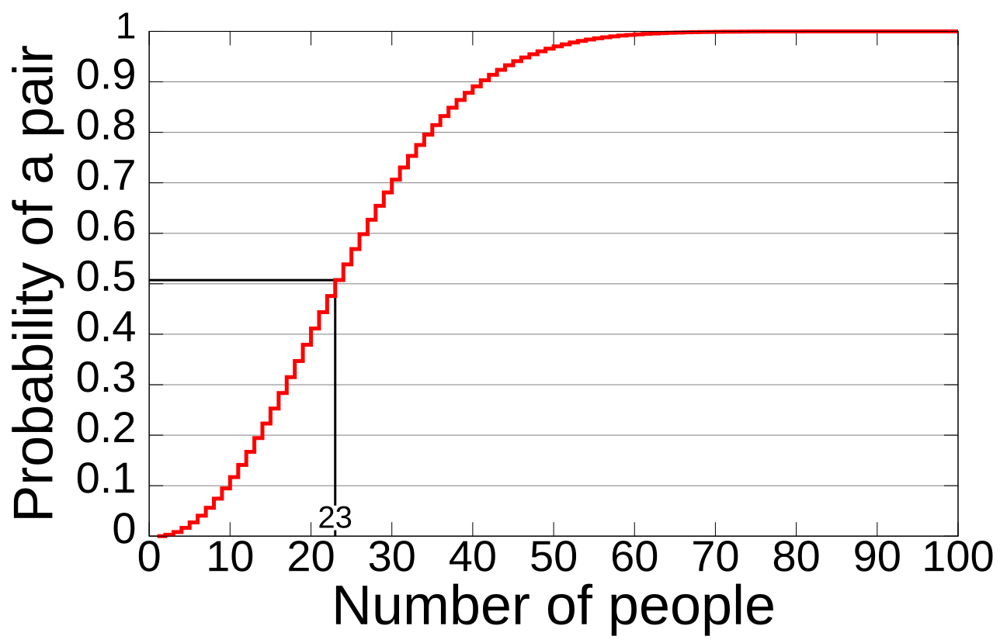
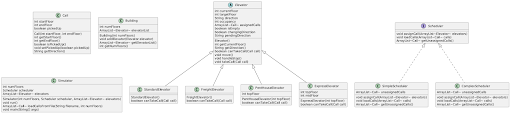

Hello! My name is Juliet Roberto and I am a senior at the University of San Diego studying integrated engineering with a concentration in embedded software. I was born and raise in Ventura, California, where I grew up hiking, thrifting, and hanging out at the beach. I still love all these things, and now I like to travel where I can do them!
As a student studying integrated engineering, I have gotten expereince with physics, chemistry, electrical circuits, material science, and more. My concentration has allowed me to explore my professional passion for software development! My favorite classes have been Integrated Approach to Engery, Digital Harware, Discrete Math, Integrated Approach to Electrical Engineering, and Engineering and Social Justice.
This past summer, I interned for Georgia Tech Research Institute on a software DevOps team. This experience gave me exposure to network troubleshooting, GitLab, deployment automation with bash scripts and Ansible playbooks, and html.
In my free time, I like to play acoustic guitar, read, and going to concerts. I'm currently obsessed with playing "Cherry Wine" by Hozier.

The birthday paradox is a phenomenon that states that in a room full of 23 people, there is a 50% chance at least 2 people share the same birthday. At 75 people, the chances increase to 99.9%. This website does a good job giving the mathmatical explanation!
The top level of the program is a Simulation class, which creates an Experiment object for the number of people from 5 to 100 at increments of 5 (so for 5, 10, 15, 20,..., 85, 90, 100) and with 20 trials each. The Experiment class runs the experiment based on the number of people and trials given. It returns a percent of trials that contained duplicate birth dates. A Trial object takes in the number of people in the experiment and returns a boolean value based on if a birthday repeats. The Birthday object creates a random day of the year to represent a single person and their birthday.

This project builds a fully functional elevator simulator that models how real buildings might manage multiple elevators serving passengers across different floors. The simulator utilizes software design, object-oriented programming, and test-driven development to create a system that mirrors the complexity of real-world elevator dispatch logic.
The simulator manages a building with up to four types of elevators - Standard, Freight, PentHouse, and Express - each with its own rules for which calls it can accept and how it moves. Calls are submitted as pickup and dropoff floor pairs, and a scheduler assigns them to elevators round by round. Two scheduler strategies are available: a Simple Scheduler that always checks elevators left to right, and a Complex Scheduler that assigns each call to whichever elevator can reach the pickup floor fastest. The simulation runs until every call has been completed and every elevator has returned to the ground floor, and prints the full state of the building at each round.
The project is built around a strong object-oriented foundation. An abstract Elevator class captures all shared behavior - movement, pickup and dropoff logic, and direction management - while each elevator subclass only needs to implement canTakeCall(), which implements its unique policy. This is inheritance and polymorphism: the simulator can call move() and canTakeCall() on any elevator without knowing its type. The Scheduler interface enforces a contract that both the Simple and Complex implementations follow, making it easy to swap strategies without changing any other class. Fields like occupancy, assignedCalls, and direction are kept on the Elevator class rather than scattered across subclasses, which supports encapsulation and keeps each class focused on a single responsibility. One key design assumption was tracking pickedUp state on each Call object rather than maintaining separate lists for assigned vs. boarded passengers. This simplified the movement logic considerably and kept findNextTargetFloor() clean.
I was responsible for implementing the Simulator class and the Elevator classes. This includes the main simulation loop, the round-by-round print output, file loading, and the unserviceable call validation that prevents infinite loops when an elevator configuration can't handle a given call. The logic in abstract Elevator class required careful handling of rules for pickups, dropoffs, and direction changes. Throughout the project I attempted to follow test-driven development, writing each unit test before implementing the corresponding method and committing them together so the commit history reflects the TDD process. I used Mockito to mock Call objects in elevator tests, which kept tests focused on elevator behavior without depending on Call implementation details.
email address